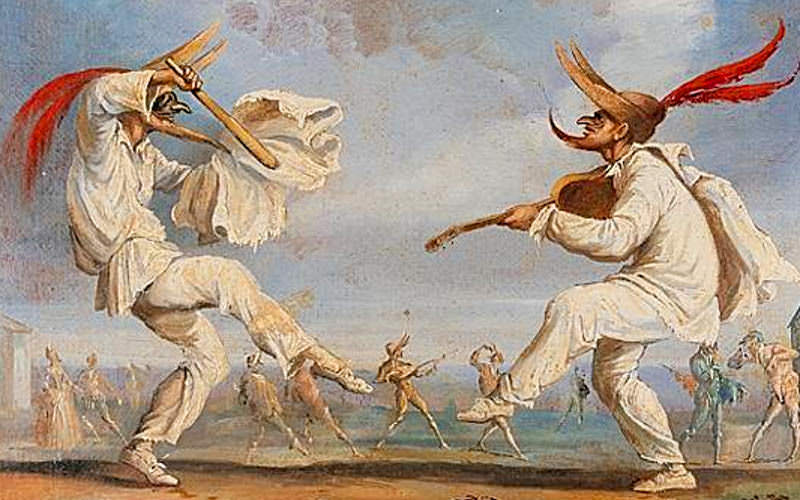

Commedia dell'arte

historia:
A Commédia Dell' Arte seguia o improviso. A partir de um roteiro, o canovaccio, os atores interpretavam seus personagens e contavam uma história, com muitos elementos de comédia e acrobacias. Surgiu na Itália, no século XV e se desenvolveu na França e foi sempre muito popular até o século XVIII.
personagens principais:
Arlecchino, Colombina, Pantalone, Brighella, Pedrollino, Pulcinella, Dottore, Capitano, Orazio, Isabella.São os principais personagens desta arte.